More Voice Lines
A mod for Barotrauma
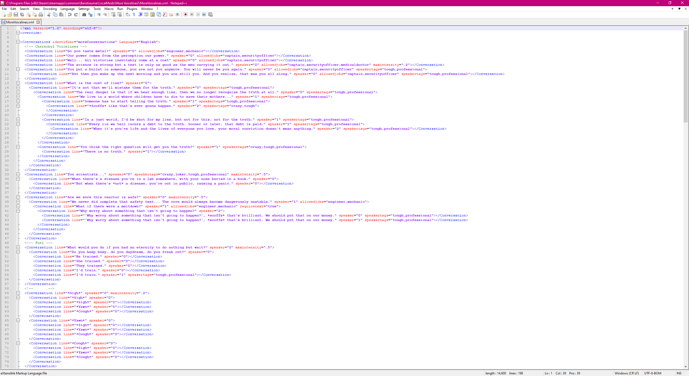More Voice Lines in a mod that I decided to make on a whim for Barotrauma. In the game, you need to work together with other players to keep your submarine function. There is menial maintenance that can't be ignored, pressing emergencies that will demand attention, and combat that constantly threatens the sub. In addition there are other objectives too that will require crew members, such as EVA exploration, deep sea mining, and more. It's hard to gather enough people to manage everything, so you can also hire NPCs as crewmembers in order to help ease the burden on your players. Every now and again they will strike up random conversations with other NPCs, which is where my mod comes into play. I wanted to add in some more, so I made a mod to do that. So I made a mod that adds in a whole bunch of dialogue trees, everything from inside jokes, stims, references to other media, and more.
It's a very simple mod, but was still my first venture into modding games. I wanted to archive this mod because of that. Additionally, I learned a great deal about game development by doing this - stuff like mod handling and file storage were important lessons for me. A ended up hitting a brick wall with one of my games because I had no idea how to store the game state on the disk. Once I figured out how, the game was too far along in development for the rework to be simple and would've required a refactor of the whole game. I ended up abandoning that project, but want to come back to it at a later date. I took what I learned from this experiment and my old abandoned project and began to implement file-handling at a much more fundamental level.
Published on Steam, set to friends only
Custom Submarines
I also put a lot of work into making submarines using the in-game editor. While less technically impressive than More Voice Lines, the methodical design process behind them and dedication required to make them is impressive in it's own right. I'm very proud about them, so I wanted to show them off here.
The Beluga
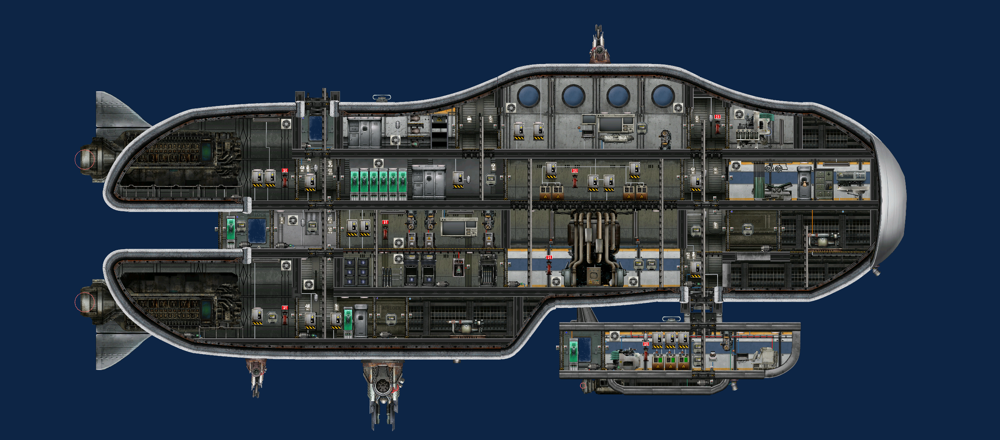 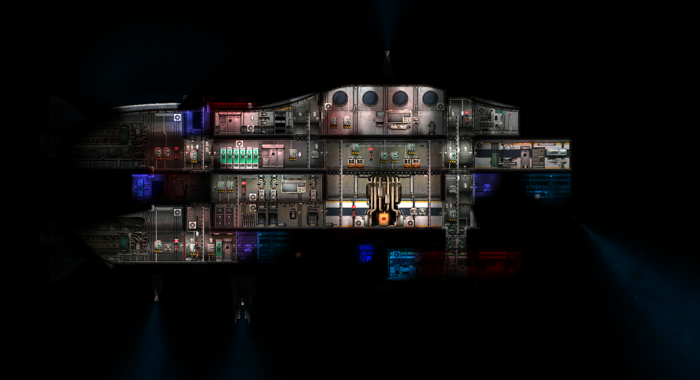The Beluga was the first submarine that I built in Barotrauma. In fact, as soon as I saw that the game had a submarine editor, I bought it on the spot and immediately started making this sub without even playing the game first. It was fun but hard since I didn't know the games systems yet. This is especially evidenced by the fact that this ship has some major buoyancy issues. The ballasts are no where near large enough for this sub so it can't take on enough water to sink quickly. It's also relatively disorganized since I built the hull first then tried to fit all the rooms I needed inside - without know what I would need in the first place. I remember it also having power problems since I couldn't figure out the best way to wire the machinery. Fires are a huge issue due because of this, as power surges can easily fry the electronics. Regardless, it's still fully functional.
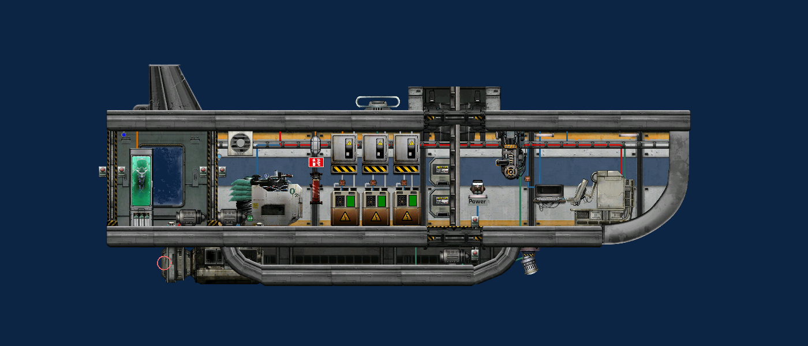Coming in at about 40 meters from bow to stern this was an ambitious project even for experienced players. It comes with two coilguns, a railgun, and a depth charge launcher for defense against Europan wildlife, and has a detachable shuttle for exploration. The Salmon shuttle can be seen in the bottom right of the pictures. It's fully battery powered and will die after after a few minutes away from the Beluga. However, it has a unique messaging system that I haven't seen elsewhere in the game yet. One terminal is on the Beluga and the other is on the Salmon, and text messages can be relayed between them much further than your character's radio headsets can reach.
The Betta
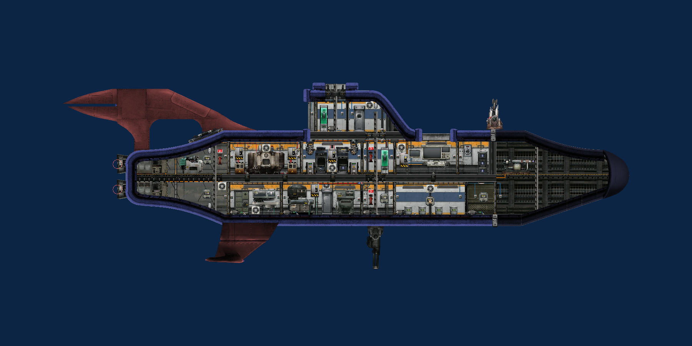 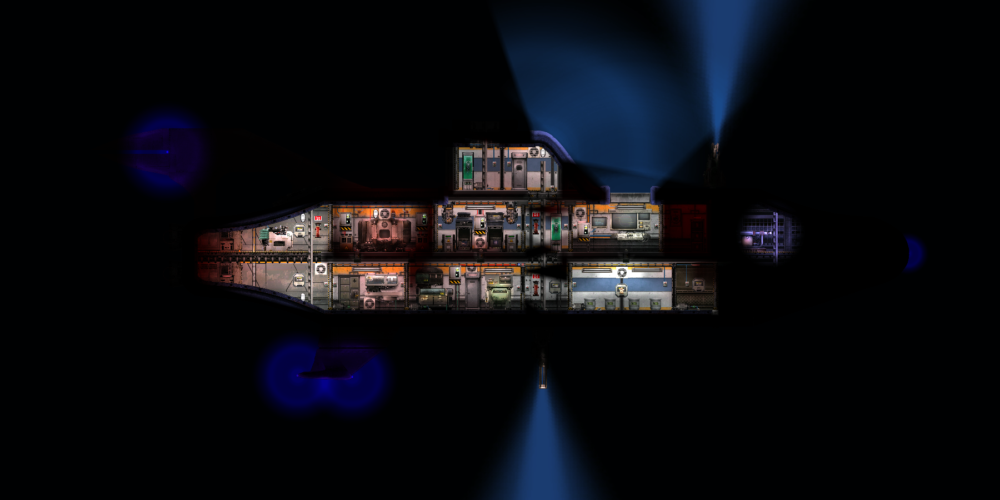The Betta was a step back in terms of size, being only 33 meters long and half as tall as the Beluga. I designed this one to be a cheaper, more general purpose sub compared to my previous one. After playing the game a bit, I came to realize that the crafting and farming mechanics were pretty fun to engage with. This sub comes equipped with a crafting bay and a dedicated hydroponics bay as well, which no other ships have to my knowledge. The sub is equipped a coilgun, a discharge coil, and a chain gun - which was a new addition to the game at the time.
One final interesting note is that this submarine was named and designed after my betta fish Flag. Flag had a blue body, red fins, and a deep blue / black head. I have a picture of him in the Gallery if you wanted to see my inspiration.
The Gastropod
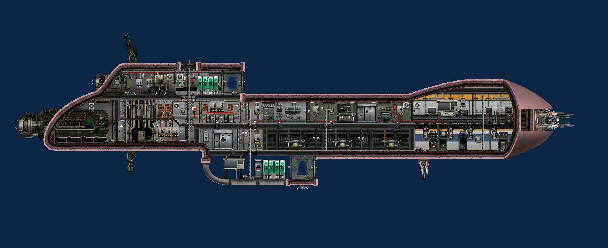 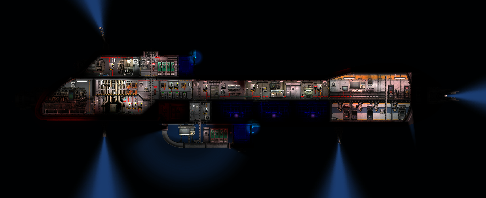I designed the Gastropod to be a high-end attack class submarine capable of dealing with threats found deeper in the abyss. It's about 50 meters from bow to stern and comes equipped with a coilgun, chain gun, pulse laser, and a railgun. The interior is brimming with personal firearms in case Europan lifeforms find their way in through hull breaches. The The sub is also blazingly fast, having an intense engine setup with an advanced self-regulating reactor to safely supply it with power. And no, it's not supposed to be so phallic, I designed it off of a snail.
The big thing of note about this submarine is the reactor design. With the massive engines I strapped to this thing, propelling yourself forwards will cause the reactor to spool up. If you suddenly stop, the power draw is lowered but the reactor takes a second to cool down. This causes an immense power surge which can very easily start fires. I fixed this issue by including capacitors that absorb this excess power and slowly distribute it over time. This gives the reactor time to cool down and makes the submarine much safer.
The Sturgeon
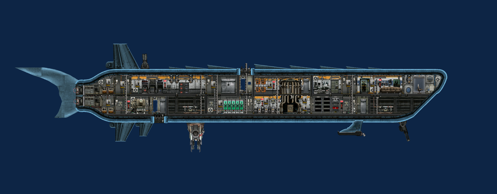
You'll notice that my designs have been getting longer and thinner over time. The Sturgeon measures about 45 meters in length and is designed to be an advanced civilian transport ship. I noticed a lack of civilian ships in the vanilla game. These ships also tend to by very militaristic and utilitarian, having few, if any comfortable features. That's why I made this ship. It has a pulse laser, chain gun, and a railgun, but it's most striking features come from it's insides. It has a recreational room designed simply for lounging about. Equipped with a couch and a vending machine, any civilians you transport are sure to leave a good review.
Indeed, great reviews have been had by other people on Steam. Of the 63 people who have downloaded this sub off the workshop, 3 of them have left reviews for it. Overall, they rate it 4 out of 5 stars.
NORA Imperator
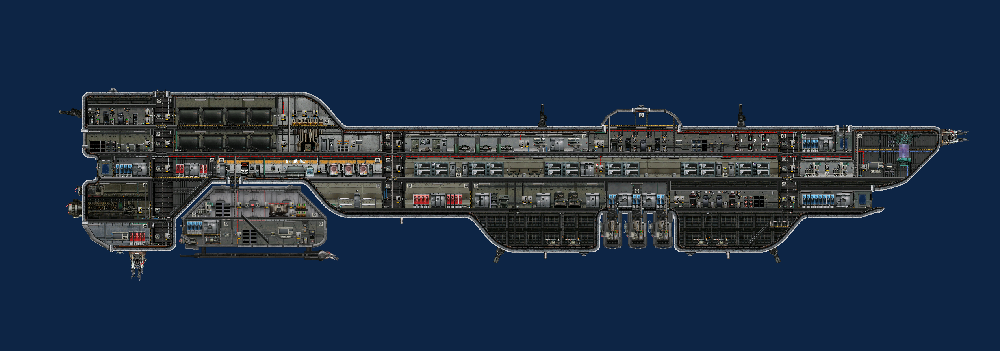 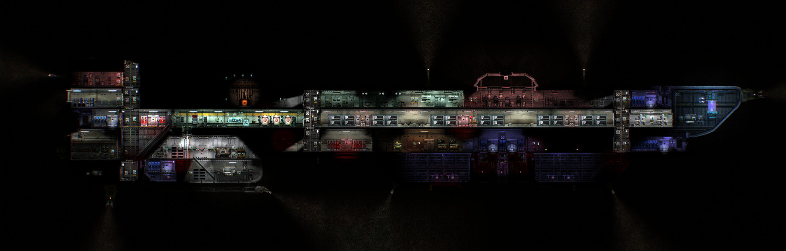The NORA Imperator is an absolutely gargantuan submarine. I wanted to design a vessel that was simply enormous, and this is what I came up with. It's over 100 meters from bow to stern and is 20 meters tall. That's large enough that if two crewmates stand on either side of the ship, their radio signal will start to cut out - which is hilarious to me. It has 3 separate gunnery departments spread across the ship, controlling a total of three chain guns, two pulse lasers, three depth charge chutes, and two railguns. Additionally, there are four empty turret hardpoints, which can be equipped with more turrets if desired. Internally, this ship has a fully functional research station, which is typically only found in-between missions at outposts. It's got 8 cargo loaders, which can hold 96 crates of supplies between them, which is equivalent to the largest cargo ships in vanilla. It boasts a huge bedroom for weary sailors, with 24 beds total. Finally, it has alien technology integrated into it as well, with an alien "copilot" - this is mostly just flavoring I added.
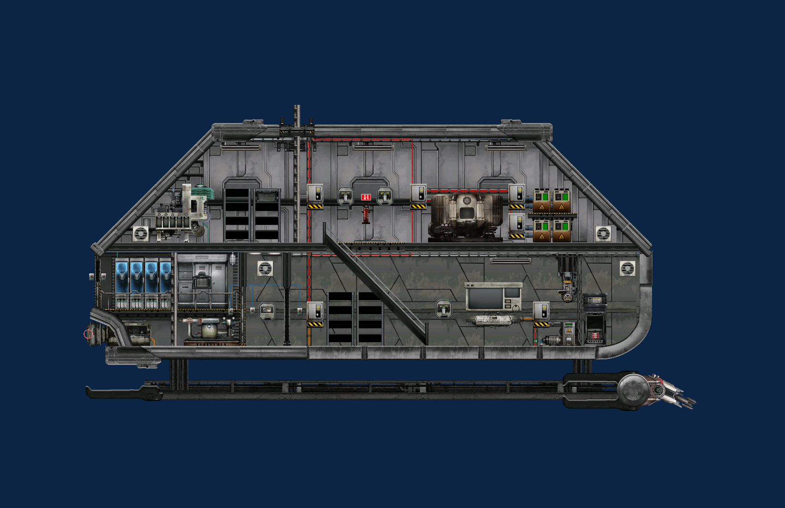This is an insane end game submarine with a lot of multifunctionality. Overall though, it's supposed to be a research vessel, and it has four separate subs it can dispatch to help it achieve this goal. The largest of these subs is the Angler. Located towards the stern of the ship, it's designed to accommodate scientists on research expeditions. It has it's own coilgun for defense and it's own reactor for power generation. It's very spacious, and can requires multiple crewmembers to operate and maintain while it's away from the Imperator.

The Imperator also comes equipped with three Plankton ships. These are extremely claustrophobic ships designed to hold a single crewmate. They have their very own micro-reactor and active sonar to allow them to operate mostly independently. Each one comes with a discharge emitter as well for defense. Their purpose is to be small enough to squeeze into alien nests and electrocute any hostiles with it's discharge defense. Essentially, it acts like a suit of armor for a diver, who would normally have to brave these situations with nothing but a diving suit. It can also help carry away any goodies you find while you adventure.
The Rowboat
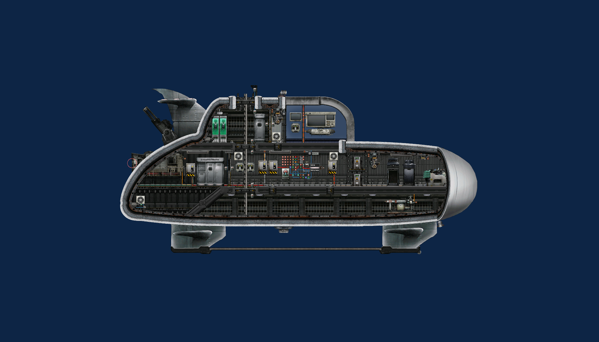
After making a bunch of high end submarines, I wanted to make a shitcan that could work in the early game. I came up with the dumbest idea possible to go alone with it as well. Introducing the Rowboat, a submarine that doesn't need nuclear fuel cells due to it's manual power generator. At the heart of this sub is a huge button. Players need to manually click it to "wind up" the generator. The generator will quickly wind back down if not attended to, so it's a constant burden on the crew - but a cheap one.
There's one small problem with the generator that I as the creator intentionally wired into it. If the generator ever winds down completely, it'll explode and likely kill everyone aboard the ship. Additionally, if it ever gets wound up too much it'll explode as well. I thought this was a hilarious idea.